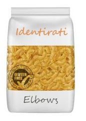

Penne Rigate

Best suited to cream-based or light red sauces which delicately coat the surface. Use heavier sauces with regular Penne. Cooks in 9 minutes. $2.62 NO ARTIFICIAL COLOURS, FLAVOURS OR PRESERVATIVES VEGAN NON-GMO
Elbows
A highly versatile shape hollow on the inside and dented on the outside. Use with any toppings, in a bake, salads or in a chunky-style soup like Minestrone. Cooks in 8 minutes. $2.65 NO ARTIFICIAL COLOURS, FLAVOURS OR PRESERVATIVES VEGAN NON-GMO GLUTEN FREE
Bowties

Bowties are butterfly-like in shape and look attractive because of their pretty shape. They're great with all kinds of toppings and are delicious with creamy sauces, like Alfredo. Cooks in 10 minutes. $2.60 NO ARTIFICIAL COLOURS, FLAVOURS OR PRESERVATIVES VEGAN NON-GMO